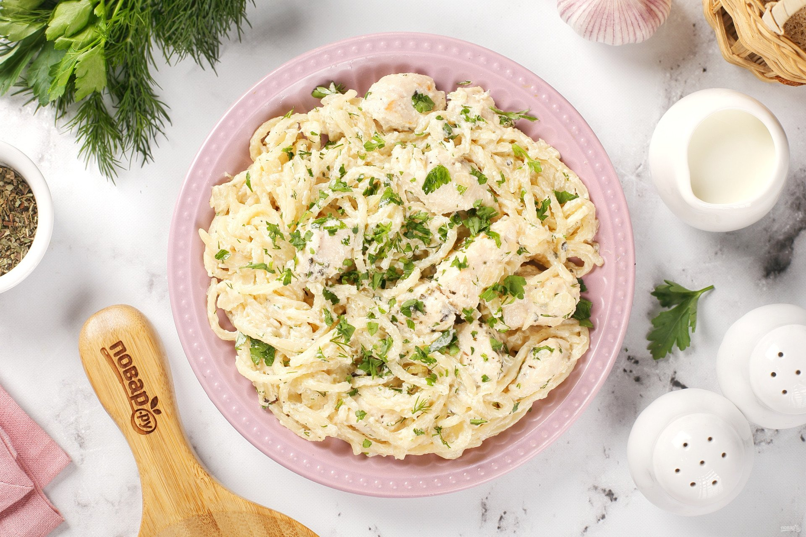
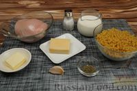
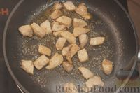
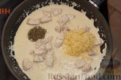
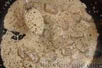
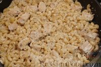

Очень вкусный и простой рецепт! Готовлю уже третий раз, вся семья в восторге!
Паста с курицей и овощами
Сытное и ароматное блюдо для всей семьи. Нежная курица, свежие овощи и паста в сливочном соусе — идеальное сочетание на каждый день!

Ингредиенты
На 4 порции- Паста (пенне) — 300 г
- Куриное филе — 400 г
- Помидоры черри — 200 г
- Болгарский перец — 1 шт.
- Лук репчатый — 1 шт.
- Чеснок — 2 зубчика
- Сливки 20% — 200 мл
- Оливковое масло — 2 ст. л.
- Соль, перец — по вкусу
Приготовление
Распечатать рецепт-

Подготовьте ингредиенты
Нарежьте куриное филе, овощи и подготовьте пасту.
-

Обжарьте курицу
На сковороде разогрейте масло и обжарьте куриное филе до золотистой корочки (5–7 минут).
-

Добавьте овощи
Добавьте лук, болгарский перец и чеснок. Готовьте ещё 5 минут.
-

Влейте сливки
Добавьте сливки, перемешайте и тушите 5 минут. Посолите и поперчите по вкусу.
-

Смешайте с пастой
Отварите пасту согласно инструкции, соедините с соусом и хорошо перемешайте.
Пищевая ценность (на 1 порцию)
- 420 ккалКалорийность
- 28 гБелки
- 15 гЖиры
- 45 гУглеводы
Советы шеф-повара
- Используйте свежие овощи — так блюдо будет ярче и вкуснее.
- Можно заменить сливки на сметану 15%.
- Добавьте зелень (базилик, петрушку) перед подачей.
- Для более насыщенного вкуса используйте твёрдый сыр.
Отзывы
Все отзывыОтличное сочетание ингредиентов. Быстро и вкусно!